A conversation I still remember
One evening outside IKEA, I started a conversation with a magazine vendor and stayed for ten minutes to listen to her story.
I listened to street vendors, introduced The Big Issue Taiwan in a university feature, and made an animation for Do You A Flavor (人生百味). My capstone explored how scent could help people understand groups they might otherwise judge.
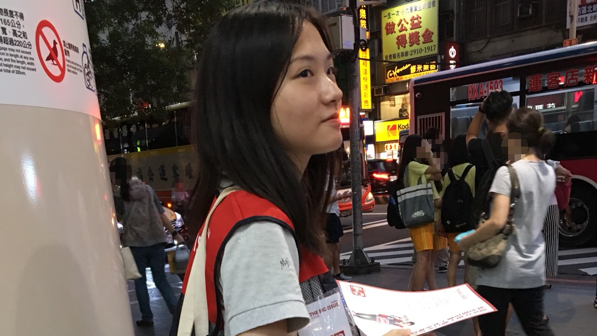
One evening outside IKEA, I started a conversation with a magazine vendor and stayed for ten minutes to listen to her story.
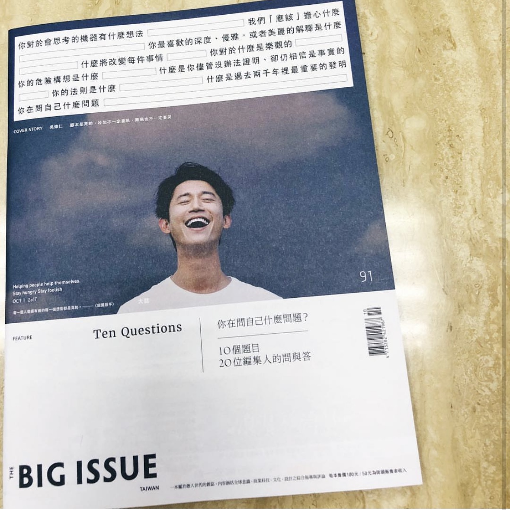
She introduced herself as Auntie Lan. She had sold The Big Issue near Shih Chien University and was carrying stacks of magazines to the IKEA area despite being seriously ill.
Across the road, Taipei Arena was full, but she had sold only four copies. She told me how it felt to be looked at sideways when she had done nothing wrong. Before we parted, she held my hand and thanked me for listening, then encouraged me to keep working for my own life and family.
Qizhang MRT Station
I had volunteered before, but I had never handed out flyers. Reaching towards commuters was difficult for me. For ninety minutes, most people hurried past without looking.
The vendor had just returned from the hospital. He took half of my flyers and stood outside the station calling out, “The Big Issue.” He bought me a drink, told me his story, and insisted that I was the one working hard. Each time someone stopped to buy a magazine, the disappointment disappeared.
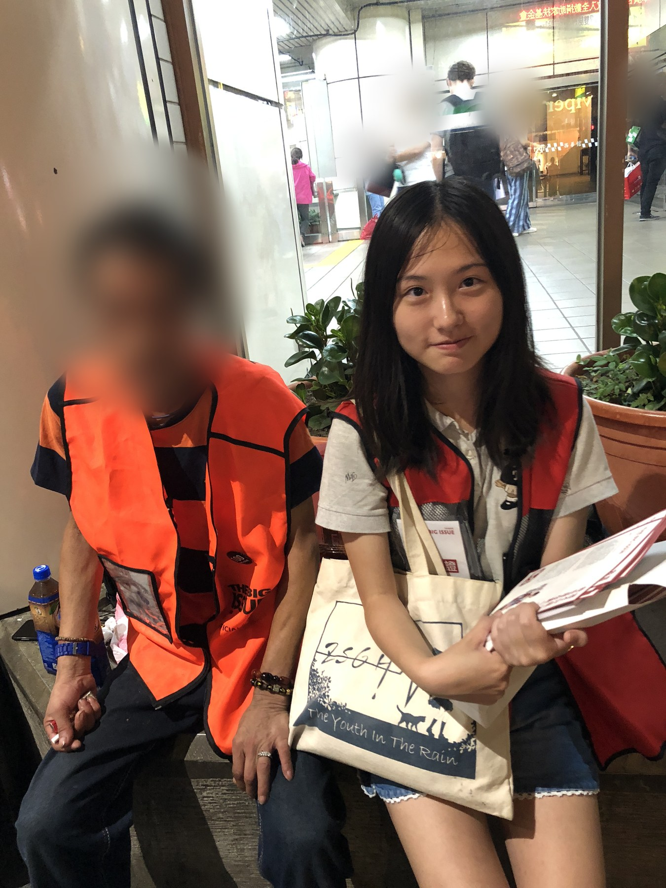
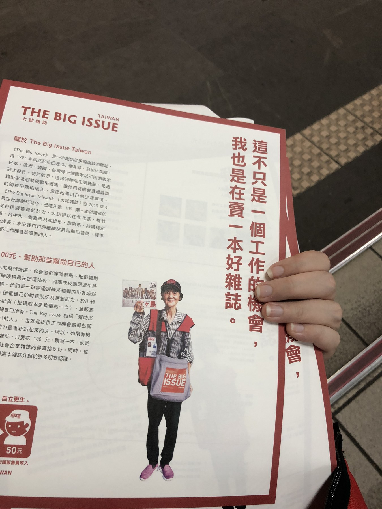
Dihua Street
Two hours at Dihua Street changed the way I understood rejection. After hearing no again and again, I stopped treating every refusal as a judgement of my worth.
The vendor told us that a workplace injury and the pandemic had narrowed the work he could take on and made rent hard to cover. He still thanked us, smiled at passers-by, and urged us to explore the neighborhood. We stayed. Watching someone buy a copy because of our introduction was the moment I remembered.
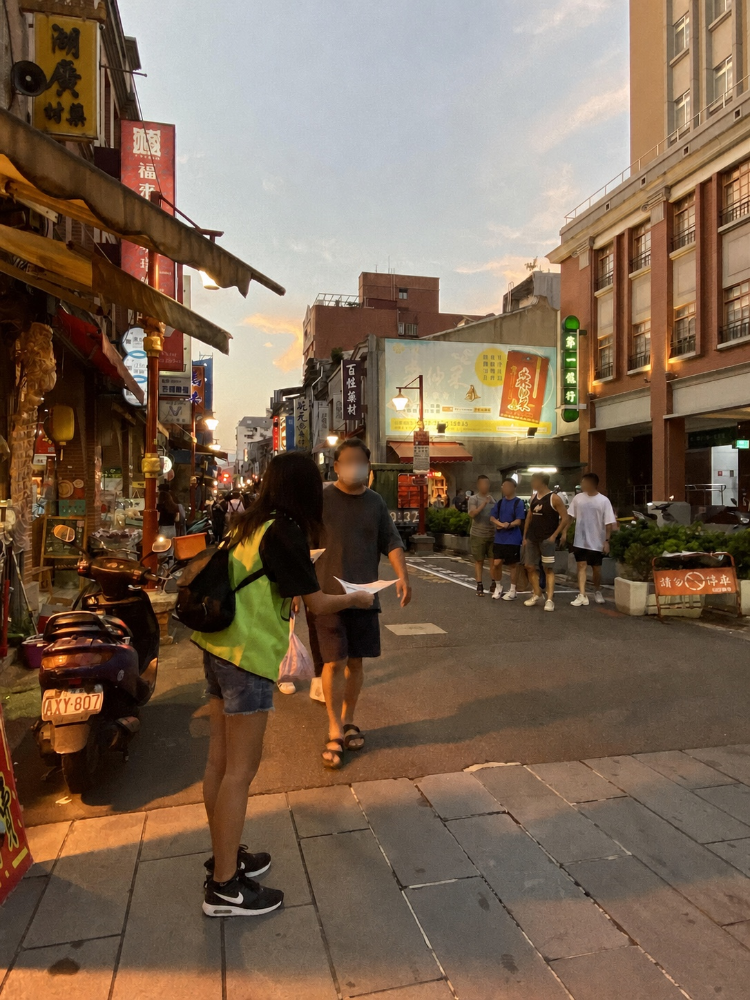
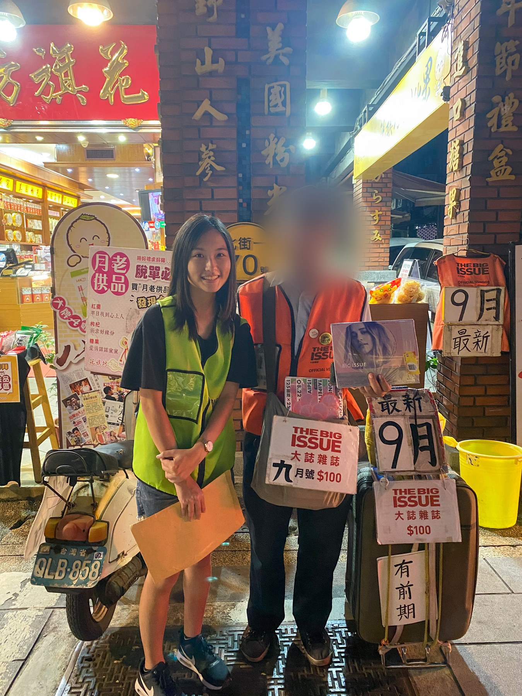
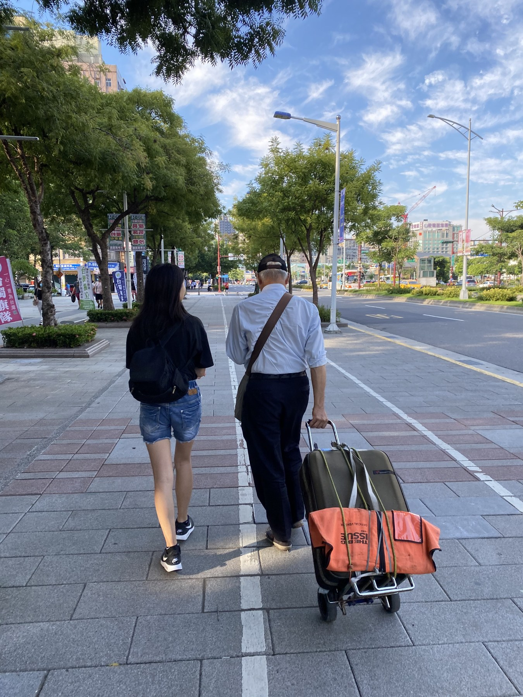
Magazine introduction + interviews
My university feature introduced The Big Issue Taiwan’s mission, editorial content, and street-sales model. I also interviewed its editor-in-chief and a vendor in Gongguan to understand how the magazine is produced and sold, and the challenges facing print readership.
I came to understand that The Big Issue offers vendors a way to earn a living through work, not charity.
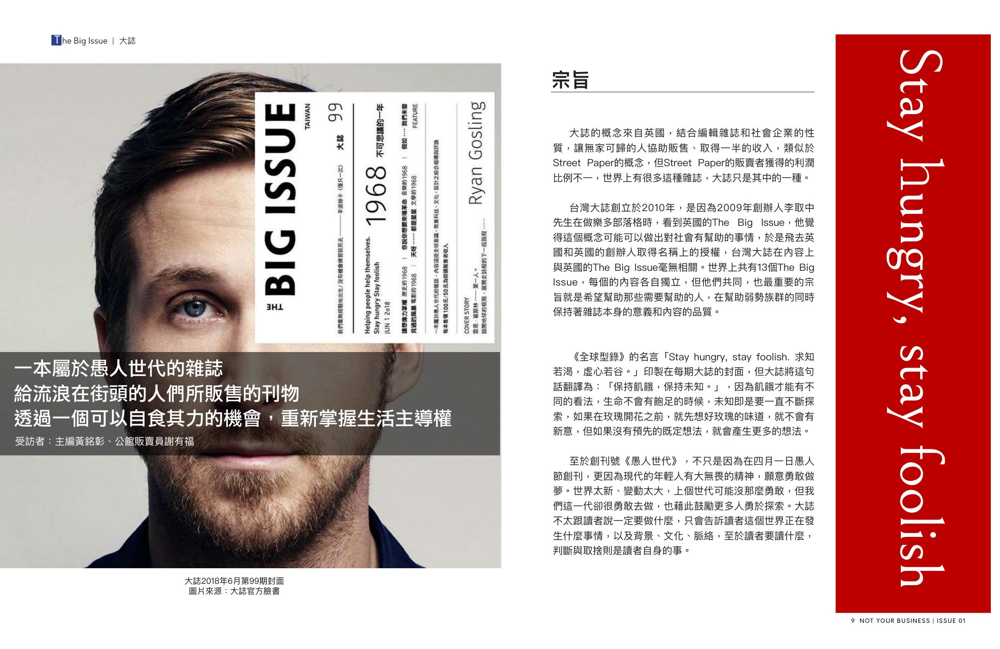
About Do You A Flavor
Do You A Flavor (人生百味) is a Taipei-based nonprofit working on urban poverty. It combines direct companionship with public education, documentation, advocacy, and participatory projects that help people encounter the issue through lived experience.
Visit Do You A Flavor ↗My contribution
I shaped the narrative, wrote the script, developed the visual language, animated the scenes, and edited the final film.
Graduation exhibition / NTU BICD
My role: curatorial team member and exhibition marketing.
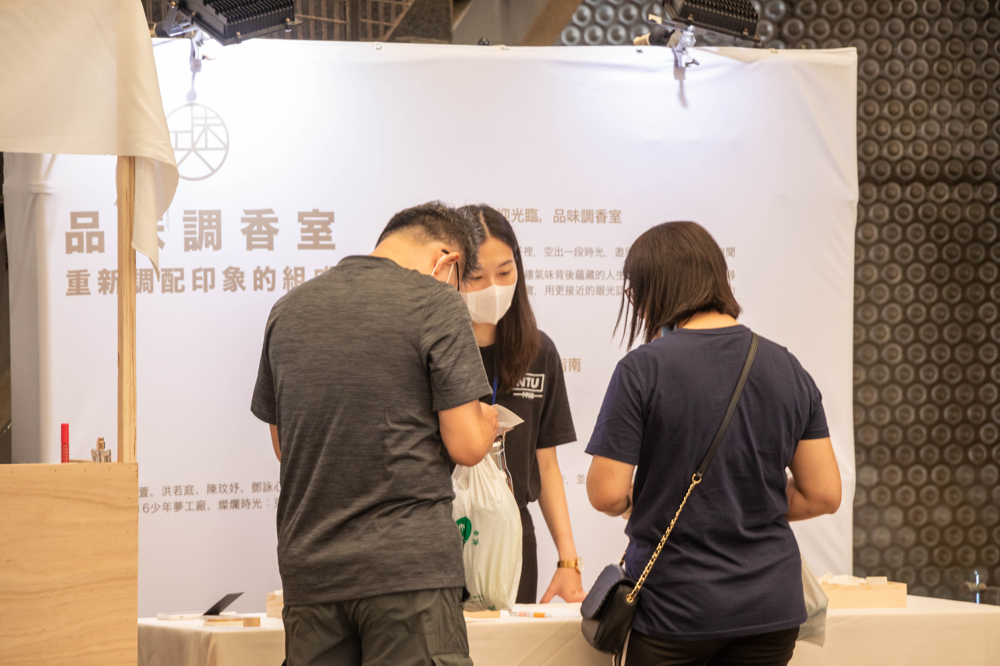
For my capstone, three teammates and I created Savoring Scents: A Fragrance Studio (品味調香室), a scent-based exhibition about migrant workers, young people in conflict with the law, and women working as nightclub hostesses. Visitors smelled a fragrance before discovering the story it represented.
We selected and blended the fragrances ourselves, then designed three spaces around the characters’ experiences. Our aim was to let visitors encounter their feelings and circumstances before making assumptions about them.
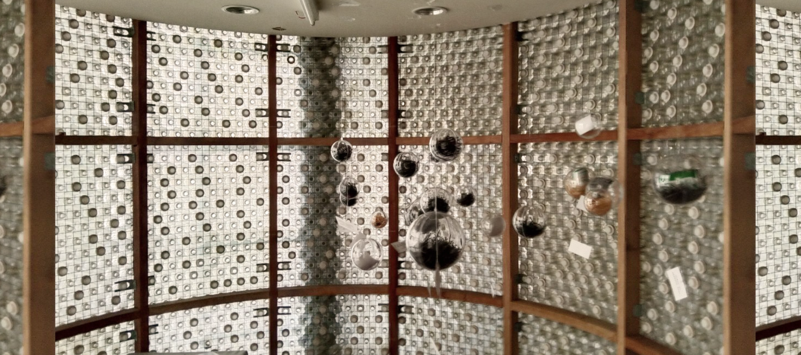
Transparent spheres held objects reflecting the young people’s closed-off inner worlds. Suspended in midair, they echoed the Mandarin homophones 非行 (delinquency) and 飛行 (flight).
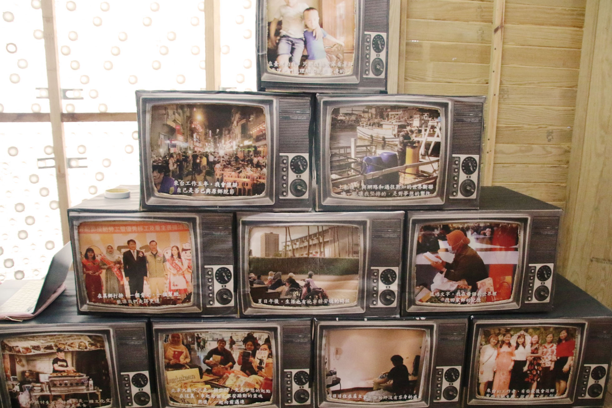
Television-shaped frames showed migrant workers’ lives in Taiwan, including difficult working conditions. The scents evoked perseverance and homesickness.
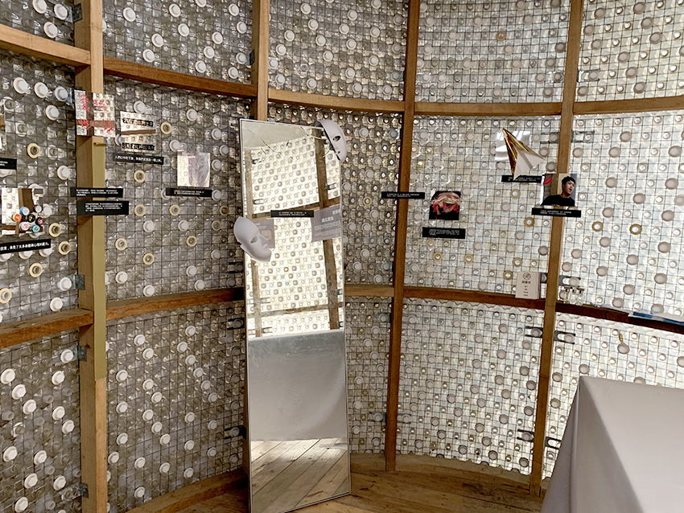
Mirrors and portraits explored the tension between a nightclub hostess’s work persona and private self. The scents evoked confidence, strength, and frustration.
Our installation was one of six projects in Our Senses, Reawakened (吾感再噪), NTU BICD’s first student-led graduation exhibition. The Mandarin title plays on “our senses” and “five senses,” inviting visitors to reconsider familiar ways of perceiving the world. I also worked on marketing for the full exhibition, which welcomed 1,000–1,100 visitors over three days.
Exhibition website ↗I learned to look beyond the labels attached to people and ask about the circumstances behind their lives.
The vendors I met were working hard in circumstances that passers-by could not see. Reading about homelessness and visiting The Poor’s Taipei helped shape our animation. Effort does not always lead to security, and poverty is not a verdict on someone’s character.
For our capstone, we asked visitors to smell a fragrance before learning whose story it represented. We wanted them to encounter a person’s feelings and circumstances before making assumptions. Volunteering gave me opportunities to listen directly; the film and exhibition were ways to invite others to consider these lives, too.